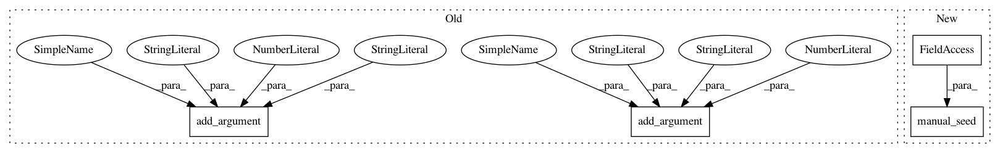

b11abe44d9c30b5dd4d53f62f5e6f37b3ad7b319,examples/word_language_model/predict.py,,,#,11
Before Change
parser = argparse.ArgumentParser(description="PyTorch PennTreeBank RNN/LSTM Language Model")
parser.add_argument("--data", type=str, default="./data/penn",
help="location of the data corpus")
parser.add_argument("--bptt", type=int, default=35,
help="sequence length")
parser.add_argument("--seed", type=int, default=1111,
help="random seed")
parser.add_argument("--no-cuda", dest="cuda", action="store_false",
help="use CUDA")
parser.add_argument("--checkpoint", type=str, default="./model.pt",
help="model checkpoint to use")
parser.add_argument("--outf", type=str, default="generated.txt",
help="output file for generated text")
parser.add_argument("--temperature", type=float, default=1.0,
help="temperature - higher will increase diversity")
parser.add_argument("--words", type=int, default="1000",
help="number of words to generate")
parser.add_argument("--log-interval", type=int, default=100,
help="reporting interval")
args = parser.parse_args()
// TODO: set seed
After Change
args = parser.parse_args()
torch.manual_seed(args.seed)
corpus = data.Corpus(args.data)
ntokens = len(corpus.dictionary)
In pattern: SUPERPATTERN
Frequency: 3
Non-data size: 4
Instances
Project Name: dnouri/skorch
Commit Name: b11abe44d9c30b5dd4d53f62f5e6f37b3ad7b319
Time: 2017-11-15
Author: marian.tietz@ottogroup.com
File Name: examples/word_language_model/predict.py
Class Name:
Method Name:
Project Name: OpenNMT/OpenNMT-py
Commit Name: d5a75ba09ae0595ca284fd806475eb8d3f771387
Time: 2017-01-17
Author: adam.paszke@gmail.com
File Name: word_language_model/main.py
Class Name:
Method Name:
Project Name: dnouri/skorch
Commit Name: b11abe44d9c30b5dd4d53f62f5e6f37b3ad7b319
Time: 2017-11-15
Author: marian.tietz@ottogroup.com
File Name: examples/word_language_model/predict.py
Class Name:
Method Name: